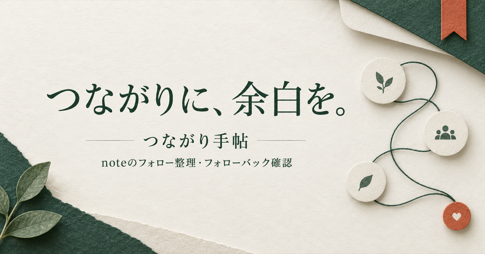

無料・非公式のChrome拡張 β版
つながり手帖
noteのフォロー整理・フォローバック確認
つながりに、余白を。読みたい人を大切に、一人ずつ自分のペースで。

noteのフォロー・フォロワーを見やすく整理。取得できた情報からフォローバックや片思いを確認し、残す人・保留・メモで一人ずつ見直せる無料のChrome拡張です。解除はnoteで手動操作。非公式β版で、全員を取得できない場合があります。
無料β版を試す見直す時間を、少し軽く。
関係が見える
フォロー・フォロワー・片思い・残す人をカードで切り替え。判定できない関係は「要確認」と表示します。
判断を残せる
フォロー一覧で残す・保留・確認済みを記録。自分用のメモや取得履歴もブラウザ内に保存します。
自分で選べる
検索、並び替え、最後のページへの移動に対応。「noteで確認」から相手を開き、解除は手動で行います。
Chromeでの使い方
このβ版はChromeウェブストア未掲載です。パソコン版Chromeで、ZIPを展開して拡張機能を読み込みます。紹介ページを開くだけでは取得は始まりません。
- ZIPを展開し、note-gardenフォルダを保管します。
- Chromeの拡張機能管理画面（chrome://extensions）でデベロッパーモードを有効にし、「パッケージ化されていない拡張機能を読み込む」からnote-gardenフォルダを選びます。
- noteにログインし、自分のプロフィールページを開きます。
- Chrome右上のパズル形アイコンから「つながり手帖」を押し、管理画面の「情報を更新」を押します。取得が終わるまで元のnoteタブを開いたままにしてください。
- 確認したい人を選び、noteのページで現在の関係を確かめます。
フォルダを削除・移動すると読み込めなくなることがあります。スマートフォン用アプリではありません。
使う前に知っておいてほしいこと
すべてのフォロワーを取得できますか？
全員を取得できない場合があります。制作時の確認では各一覧は最大1,000人でした。プロフィールの総数と取得件数を分けて表示し、未取得の人を片思いとは判定しません。
古いフォローから整理できますか？
取得した一覧を逆順にできますが、取得範囲外の人は表示できません。過去の正確なフォロー日も不明です。記録する「初回確認日」は、この手帖で初めて確認した日です。
データはどこに保存されますか？
拡張の履歴・メモ・設定はブラウザ内に保存します。拡張から運営者へのデータ送信やアクセス解析は実装していません。情報更新時にはnoteに接続します。バックアップは自分で書き出して保管できます。
note公式のツールですか？
非公式の無料β版です。note株式会社による提供・承認を示すものではありません。note側の仕様変更により取得できなくなる場合があります。自動フォローや自動解除は行いません。